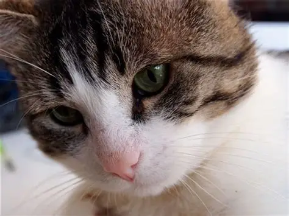
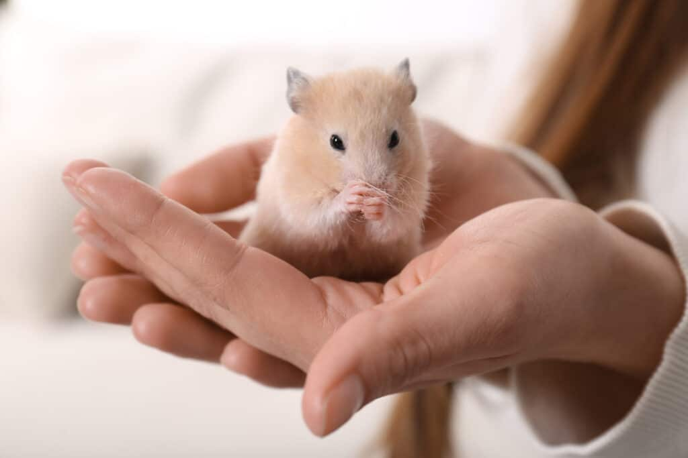
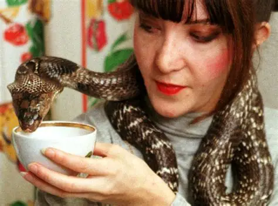

🐶 Perros
Son leales, sociables y excelentes compañeros. Necesitan ejercicio, paseos y mucha interacción.

🐱 Gatos
Independientes, limpios y cariñosos. Son ideales para departamentos y espacios pequeños.

🐹 Hámsters
Pequeños y fáciles de cuidar. Requieren poco espacio y son excelentes para principiantes.

🦜 Aves
Coloridas e inteligentes. Algunas especies pueden imitar sonidos y palabras.

🐍 Reptiles
Mascotas fascinantes que requieren cuidados específicos de temperatura, iluminación y alimentación.